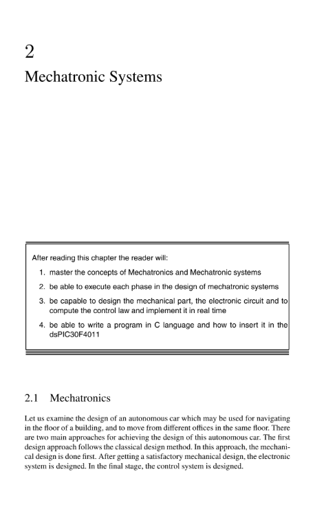

week06-09 <<
Previous Next >> week15-18
week10-14
week10 -google api 設定
1.登入gmail (nfu.edu.tw) 帳號，到 https://console.developers.google.com/
2. 進入並建立專案
3.到 老師 2020pj1 ，git clone 完整倉儲進 tmp
4.啟動 api 與 服務，選取 google +domain api (啟用)
5.選取憑證 ，並同意，選擇內部，應用程序名稱自己修改
6.在api和服務下，進入憑據 建立"oauth 客戶端id類型"
7.選擇網路應用程式，選取建立，將帳號與密碼 純入tmp下
授權來源:
javascript: https://localhost:8443/
重新定向URL : https://localhost:8443/login/google/
8.啟動leo，將cd2020pj1打開，編輯路徑和名稱
9.儲存並選取 drawROC，輸入 pip install authomatic
10.進入倉儲cd2020pj1，輸入 python wsgi.py
assignment 03
因為本組是採輪流開會制。這次是我開
工作分配:
翻譯MSModelingAndTFApproaches:
40723232 1-20
40723234 21-50
40723204 51-80
40723225 81-110
40623115 111-140
40723245 171-207
翻譯MSModelingAndTFApproaches:
40723238
40723210
翻譯MechEducFutureNeed:
40723250
40723210
翻譯MechaFutureAndChallenges:
40723212
Mechatronic project
40723210
影片連結 :https://www.youtube.com/watch?v=GmKxlNPx-gs
assignment 我負責翻譯的部分

2.1機電一體化
讓我們研究一下自動駕駛汽車的設計，該自動駕駛汽車可用於在建築物的樓層中導航，並從同一樓層的不同辦公室移動。實現該自動駕駛汽車的設計有兩種主要方法。第一種設計方法遵循經典設計方法。在這種方法中，首先要進行機械設計。在獲得令人滿意的機械設計之後，就設計了電子系統。在最後階段，設計了控制系統。
第二種設計方法是在設計AC的同時要注意每個系統對整體設計的影響。通過這種方法，在設計自動駕駛汽車的機械，電子和控制系統時，要同時考慮每個系統的設計及其對其他兩個系統的影響。
因此，只有在研究了這種設計對電子設計以及控制系統設計的影響之後，才能最終確定機械系統。在這種方法中，每個系統都要考慮三個系統（機械，電子和控制）之間的相互作用以及它們對最終設計和性能的影響。
每個系統的設計步驟。第二種設計方法的好處非常明顯。主要優點之一是可以對每個系統進行最佳設計，從而實現最佳整體性能。在經典設計方法中這是不可能的，因為一旦設計了機械系統，
這將是最終的機械設計。同樣，一旦確定了機械設計（例如所用的材料，設計的尺寸），它將決定並可能限制電子系統中的可用替代方案（所用電動機的尺寸，電動機的位置等）。 ）設計，這反過來也將限制整個系統所使用的儀表和控制系統的替代方案。機電一體化為更好的設計提供了三個系統（機械，電子和控制）的設計之間的相互作用。
圖2.1以簡單的方式介紹了機電設計方法。一側箭頭表示設計過程的流程，而兩側箭頭表示最終產品的不同系統的設計之間的交互。雙向箭頭表示需要在設計過程中的任何時間點和正在設計的任何系統上考慮總體設計。他們
意味著設計在任何步驟都可能影響其他系統的設計。
如果刪除了雙向箭頭，我們將獲得經典設計方法，其中不存在任何交互作用。
在文獻中，已經為機電一體化提出了許多定義。這些定義主要取決於在機電一體化的某些方向上工作的一個人或一群人在該領域的視野和研究興趣。在我們看來，機電一體化可以定義為工程學的跨學科領域，其產品設計的功能取決於通過控制方案連接的機械，電氣和電子組件的集成。
如今，機電一體化一詞已享譽全球，許多機電一體化系統都設計用於個人或商業用途。我們日常生活中使用的所有小工具實際上都是機電一體化系統。作為這些小工具的示例，我們提到了筆記本電腦和汽車，其中有許多機電一體化系統
用過的。
機電一體化系統可以看作是一種能夠感知周圍環境並根據收集到的信息做出適當決策的設備。為了感知周圍的環境，需要傳感器，而沒有這些設備，機電一體化系統將無法執行其設計任務。如今，汽車擁有許多機電一體化系統來協助駕駛員進行安全駕駛，其中我們引用：
•安全氣囊
•ABS剎車
• 速度控制
•等
此外，為了採取適當的措施，機電一體化系統需要一個智能算法，該算法可以對一些適當的執行器（例如簡單的開關）進行操作，
直流電動機，步進電動機，交流電動機，液壓電動機或氣動電動機來定位例如我們要控制的機械零件。
機電一體化系統的智能被編程為一種高效的算法，可協調所用設備的所有任務。該算法通常在功能強大的微控制器上運行。
機電一體化系統的設計是一項艱鉅的任務，需要能夠理解系統不同要素的跨學科工程師。每個機電一體化系統的主要組件是：
•機械部分
•傳感器
•執行器
•電子線路
•和程序
作為機電系統的示例，我們引用
•直流電動機的位置控制
•平衡機器人
•移動機器人
•和磁懸浮
這些系統將在本卷中廣泛使用，以說明我們將介紹的重要概念。在介紹這些示例之前，讓我們集中討論機電一體化系統的主要部分，並就如何設計或選擇它們提供一些指導。
2.2機械零件
機械部分代表了我們要設計的機電系統中的主要組件。它可以由現有組件製造或製造。
在本部分的階段設計中，應更加註意以下幾點：
• 價格
• 形狀
• 重量
• 規模
•等
注意機電系統將在其中運行的環境也很重要。這將幫助我們選擇合適的材料來製造機械零件。機電系統的維護也是一個關鍵點，這就是為什麼我們在設計階段要注意系統所有關鍵部分的可訪問性。在現階段考慮所有機電一體化系統的回收也變得很重要，因為它將無用地尊重我們為下一代保護的環境。
機械零件可以由鐵，鋁，塑料，複合材料或任何其他材料製成。選擇其中一種材料或將其組合取決於許多因素，例如係統運行的環境，
重量，機械零件的設計任務等。
在設計該零件時，還應注意零件的外觀以及隨後必須集成機電系統的其他零件（例如傳感器，執行器，電子電路等）的事實。所有零件的組裝或拆卸系統應該簡化，以便每個人都可以組裝拆卸件
需要時的系統。
2.3傳感器
傳感器是每個機電一體化系統的關鍵點。從某種意義上說，系統的眼睛可以檢測所有類型的變化並採取適當的措施。傳感器可以看作是將諸如位置，速度，加速度，溫度，流量等物理現象轉換為
易於測量或處理的電信號。傳感器由換能器和信號調節單元組成。如今，對於某些現象，存在許多可用於感測它們的傳感器，這使得選擇非常困難。即使對於有經驗的人來說，為合適的應用選擇傳感器始終是一項艱鉅的任務。工程師在選擇任何傳感器時必須考慮以下幾點：
•誤差/精度/分辨率
•範圍或跨度
•非線性
•重複性
•磁滯
•穩定性/漂移
•帶寬
•可靠性
• 成本
•易於使用
如今，有許多類型的傳感器可以根據其應用或操作原理進行分類。在機電系統中最常用的傳感器中，我們引用：
•編碼器
•加速度計
•陀螺儀
•和相機（圖像傳感器）
編碼器可以定義為分配代碼以表示某些數據的設備。更具體地，可以將其視為用於將旋轉運動或角位置轉換為適於計算機使用的一系列電子脈衝的傳感器或換能器。對脈衝進行計數並推導出測量的輸入值。市場上現有的編碼器是絕對式或增量式。
它們在許多應用中使用，我們引用：
•位置控制
•機器人
•數控機床
•醫療設備，例如MRI，CT-Scan和PET-Scan機器
•等
絕對編碼器主要由具有許多磁道的光盤組成，這些磁道根據軸的位置給出數字字。例如，如果我們考慮一個具有8個磁道的磁盤，則在這種情況下，編碼器具有256個不同的位置，其角度分辨率為1.4度。格雷碼和二進制碼是
常用於絕對值編碼器。
與絕對值編碼器相比，增量編碼器更簡單，它由兩個磁道和兩個提供兩個通道A和B的傳感器組成。當傳感器的軸旋轉時，兩個正交信號通道上會出現脈衝序列。這些信號可用於確定角位置和旋轉
感。第三輸出通道，稱為Index，通過轉數產生脈衝，並用於計算轉數。
加速度計是一種可用於檢測加速度和傾斜度的設備。
如今，加速度計用於汽車中以確保乘客安全。它們的作用是在需要挽救乘客生命時檢測碰撞並展開汽車安全氣囊。這些類型的傳感器用於數碼相機，其作用是保證圖像的穩定性。
如今，加速度計採用MEMS技術。 MEMS加速度計通常採用最小的表面安裝封裝，可以檢測多達3個軸的加速度。該加速度計的數據可以直接由微控制器使用，因此在需要時採取適當的措施。
加速度計可用於測量物體的加速度或測量傳感器所附接的物體的傾斜度。陀螺儀可以看作是一種由安裝在基座上的旋轉輪組成的設備，因此其陀螺儀的軸可以在某些或所有方向上自由旋轉，並且無論基座如何移動，都可以在空間上保持相同的絕對方向。該設備用於飛機，衛星，機器人等。如今，陀螺儀採用MEMS技術，有助於將其應用於機電一體化
系統。
相機（圖像傳感器）可以看作是互補金屬氧化物半導體（CMOS）或基於電荷耦合器件（CCD）的芯片，它們將光強度記錄為可變電荷。相機包含排列在矩陣中的數百萬個像素，當拍攝元素的圖片時，它們會捕獲並記錄光。相機廣泛用於圖像處理以進行質量控制，
監督等
2.4執行器
致動器定義為將某種形式的動力（例如液壓或電力）轉換為線性或旋轉運動的設備。它們代表了機電系統的組成部分。實際上，使用了不同類型的執行器，其中包括：
•電動執行器
•液壓執行器
•和氣動執行器
電動執行器是一種將電能轉換為線性或旋轉運動的設備。它們用於定位或給機電一體化系統的機械部分提供速度。常見的電動執行器有：
•直流電動機
•交流電動機
•步進電機
•和開關
這些執行器具有以下優點：
•高速
•自給自足
• 低成本
•設計簡單
•可靠的操作（更少的維護）
• 高效率
• 長壽
除了便宜和簡單之外，直流電動機還易於控制速度，位置和扭矩。儘管它們的同系交流電動機通常在速度控制方面很昂貴，但在低速運行時表現出一些不穩定，並且自身的定位控制也很差。
電動執行器通常是精確而靈活的。它們是精確定位機械零件或在需要時快速產生力的理想選擇。它們的主要缺點是在運行期間需要冷卻系統。如果對它們進行了良好的設計和良好的保護，它們的維護將減少到滑動觸頭或換向器的變化上。大負載可能會燒毀
電動執行器（如果未正確安裝保護裝置）。
步進電機更適合控制不需要反饋的機械零件。這些類型的執行器通常用於開環控制和機械零件的定位。為此，微控制器發送一定數量的脈衝。這些執行器用於激光打印機，傳真機和大多數
用於計算機的設備。
液壓致動器可以定義為將泵提供的液壓動力轉換成有用的機械功的氣缸或液壓馬達。產生的機械運動可以是線性，旋轉或振蕩的。這種執行器具有以下優點：
•高動態響應
•高能力
•單位重量和體積的大功率
•良好的機械剛度
缺點是：
•洩漏
•需要更多維護（文件管理器）
•需要外部液壓泵
這些功能導致在精密控制系統和重型機床，移動，船舶和航空航天應用中得到廣泛使用。
氣動執行器定義為使用壓縮空氣產生機械運動（線性或旋轉）的設備。與液壓執行器類似，該執行器還需要一台用於空氣操作的壓縮機。同樣重要的是要提到這種執行器的效率很低。氣動執行器通常
價格便宜，並且其操作不受諸如灰塵等困難的環境因素的影響，並且易於安裝和操作。與其他執行器相比，由於空氣的可壓縮性，它們的精度較低。氣動執行器
指示器適合在潛在爆炸性環境中使用。與電動執行器相反，氣動執行器可以承受較大的負載，並且不需要冷卻系統。
即使對於本領域的經驗豐富的工程師來說，為合適的應用選擇執行器始終是一項艱鉅的任務，同時應牢記主要指導原則。實際上，功率，操作環境是要考慮的重點，並且可以幫助選擇執行器的類型。例如，如果機電一體化系統設計為在可能導致火花著火的採礦環境中運行，則排除電動執行器，而液壓執行器是可能的解決方案。在食品工業中，不包括液壓執行器，而電動或氣動
2.5電子電路
電子電路是機電一體化系統的大腦。 它重新組合了集成電路旁邊的無源和有源組件。 它的作用是以所需的方式管理和協調組成系統的所有組件的功能。
無源元件包括電阻器和電容器，而有源元件可以是簡單的二極管或晶體管或執行所需任務的任何集成電路。 電子電路管理和協調機電一體化系統所提供的各種功能，此外還可以為電動機提供所需的調節電壓。
不同的集成電路，傳感器，執行器和微控制器。
在設計電子電路時，必須記住，電路的尺寸及其功耗應最小化。 電路的安全性及其冷卻也很重要。 操縱高壓安全裝置時
應認真遵守規則。
2.6實時實施
一旦構建了機電一體化系統的硬件部分，下一步便是設計我們應該實現的控制算法，以確保系統能夠正確執行為其設計的任務。這種算法的設計分為兩個步驟。第一個步驟包括建立數學模型，該模型可以正確描述輸入與輸入之間的關係。
系統的輸出。該模型既可以通過對某些參數值進行的有限實驗來分析確定，也可以使用識別技術通過實驗來確定。第二步，固定所需的性能，並使用適當的技術設計控制器。該步驟的結果是確定循環方程，該循環方程將計算每個中斷的決策。該方程式表示我們必須在微控制器中實現的算法。
微控制器用於對系統設計用於的不同事件提供實時響應。通常，它以循環方式運行，並且當事件發生時，相關的中斷系統會提醒處理器中止其當前指令的處理並啟動中斷服務程序。這個中斷
例程執行我們正在使用的控制算法的主要步驟。中斷服務程序的任務完成後，處理器將返回到執行被掛起的位置。
該實現是按照以下結構完成的:
//
// Put here title and comments
//
#include "p30F4011.h" // proc specific header
//
// Define gobal variables in RAM
//
float Reference; // simple variable
int variable0; // (16 bits)
char myVariable; // (8 bits)
#define n1 10 /* sample constant definition */
#define n2 20;
int array1[n1] __attribute__((__space__(xmemory), __aligned__(32)));
// array with dsPIC30F attributes
int array5[n2]; // simple array
int variable3 __attribute__((__space__(xmemory)));
// variable with attributes
int array1[n1] __attribute__((__space__(xmemory), __aligned__(32)));
// array with dsPIC30F attributes
int array5[n2]; // simple array
int variable4 __attribute__((__space__(xmemory)));
// variable with attributes
//
// Define a struct
//
typedef struct {
// PID Gains
float KP; // Propotional gain
float KI; // Integral gain
float KD; // Derivative gain
//
// PID Constants
//
float Const1_pid; // KP + T KI + KD/T
float Const2_pid; // KP + 2KD/T
float Const3_pid; // Kd/T
float Const4_pid; // KP + KD/T
float Const5_pid; // T KI
//
// System variables
//
float y_c; // y_c[k] -> controlled output
float y_m; // y_m[k] -> measured output
float u_k; // u[k] -> control at time k
float e_k; // e[k] -> error at time k
//
// System past variables
//
float u_km1; // u[k-1] -> output at time k-1
float e_km1; // e[k-1] -> error at time k-1
float e_km2; // e[k-2] -> error at time k-2
float y_mkm1; // y_m[k-1] -> measured output at time k-1
float y_mkm2; // y_m[k-2] -> measured output at time k-2
}PIDStruct;PIDStruct thePID;
//
// Constants in ROM
//
const char Variable_Rom[] = {1,2,3,4};
const int myConstant = 100;
//
// Non memorized constants
//
#define var1 0x1234;
#define var2 "ma chaine";
//
// Functions
//
float my_Function(float a, float b)
{
int local_var;
local_var = a - b;
return local_var;
}
//
// Interrupt program here using Timer 1 (overflow of counter Timer 1)
//
void __ISR _T1Interrupt(void) // interrupt routine code
{
// Interrupt Service Routine code goes here
float Position_error;
// get the actual position from the encoder
// ThePID.y_m
Position_error = my_Function(Reference, ThePID.y_m);
.......
IFS0bits.T1IF=0; // Disable the interrupt
}
int main ( void ) // start of main application code
{
// Application code goes here
int i;
// Initialize the variables Reference and ThePID.y_m
(it can be read from inputs) Reference = 0x8000; // Hexadecimal number
(0b... Binary number) ThePID = 0x8000;
// Initialize the registers
TRISC=0x9fff; // RC13 and RC14 (pins 15 and 16) are configured as
outputs IEC0bits.T1IE=1; // Enable the interrupt on Timer 1
// Infinite loop
while (1)
{
}
return 0
}
2.7機電系統示例
本節的目的是介紹一些機電一體化系統，這些系統可以在本卷的其餘部分中使用，以展示我們將開發的不同概念。 我們將嘗試介紹這些機電系統的所有部分，以幫助讀者對機電系統的設計提出清晰的想法，並希望這將有助於他
將來設計自己的系統。
我們將僅限於使用通用組件的機電系統，例如電動執行器，編碼器，加速度計，陀螺儀等
2.7.1直流電動機控制
作為基本的機電一體化系統，讓我們設計一個可用於速度或位置控制的設置。該系統將成為幾乎所有即將出現的機電系統的基礎。我們將在這裡介紹的系統由一個直流電動機組成，該直流電動機通過齒輪驅動一個小盤。為了在速度或位置上正確地控制它，使用了增量編碼器。
該系統的機械部分是在我們的機電一體化實驗室中製造的小磁盤。刻度顯示在磁盤上，以幫助我們將其定位在所需的任何所需位置。圓盤由鋁製成，並使用螺釘牢固地固定在電機軸上。
執行器是我們從一家剩餘商店購買的小型直流電動機。它已經有一個齒輪（比率為1：6）和一個增量編碼器（100脈衝/轉）。該系統的電子電路過於簡單，可以歸納為：
•變壓器
•兩個穩壓器（T78012和T7805）
•電阻（2個10KΩ電阻，2個220Ω電阻和20個可變電阻
KΩ和電容器（3 of 0.1μF）
•二極管
•H橋
•液晶顯示器（LCD）
•開關（打開或關閉系統）
•微控制器
此設置旨在在固定位置操作。因此，我們不需要使用電池為不同的組件提供必要的電源。從交流電流中獲得必要的調節電壓。首先，在本例中，使用變壓器將交流電壓（115 V）更改為較低的36V。格拉茨橋是
與低通濾波器結合使用以對電壓進行整流並使其平滑以在組件中正確使用。
為了驅動直流電動機，需要24 V，因此使用了名為L293D（雙H橋）的集成電路（IC）電動機驅動器。字母“ D”的存在，
意味著它內置了反激二極管，以最大程度地減小感性電壓尖峰。如果是這種情況，L293D芯片會向直流電動機提供所需的功率，以將負載移至所需的位置。該IC的輸出電流為600 mA，每個通道的峰值輸出電流為1.2A。請注意此限制，因為如果
電機需要更多電流，每當我們超過1.2 A時，IC L293D就會燃燒，並且在這種情況下需要保險絲之類的保護。
對於速度或位置控制，我們使用Microchip dsPIC30F4011。我們將在系統中實現的智能以C語言編程，編譯後下載到微控制器的存儲器中。
圖2.2給出了整個機電系統的概念。我們在此設置中使用的直流電動機由Maxon製造，其齒輪比為1：6。安裝在電機軸上的增量編碼器也可用於測量磁盤的位置。通過這種設置，每轉可獲得600個脈衝。與大多數增量編碼器一樣，我們的增量編碼器使用兩個輸出通道（A和B）來感應位置。基於編碼器磁盤上的兩個代碼磁道（相位相差90度），正交編碼器的兩個輸出通道同時指示旋轉的位置和方向。因此，例如，如果A領先於B，則磁盤
盤沿順時針方向旋轉，同時如果B領先於A，則磁盤沿逆時針方向旋轉。正交信號方案的另一個好處是它能夠在一個編碼器週期內以電子方式對計數進行乘法運算。通常，以下用於此目的：
•所有計數均在通道A的上升沿生成
•通道A的上升沿和下降沿均用於生成計數
•通道A和通道B的上升沿和下降沿用於生成計數
使用第二個或第三個選項，我們可以提高分辨率，從而提高控制精度。例如，如果使用第三個選項，則分辨率提高了四倍，因此我們得到2400脈衝/轉。
對於速度控制，如果將控制器選擇為具有增益Kp的比例控制器，則係統將按以下方式工作。首先，選擇速度基準，例如100轉/秒。在每次中斷時，微控制器都會讀取磁盤的速度，將其與參考速度進行比較併計算誤差。該誤差乘以增益
Kp產生要傳送到直流電動機的電壓。由於微控制器可以提供0到5 V之間的電壓，因此集成電路電動機驅動器L293D將做必要的工作，以僅提供0到24 V之間的電壓並具有足夠的功率來移動電動機。脈寬調製（PWM）技術用於
這個案例。該技術用於生成可變寬度的脈衝，以表示應傳遞給直流電動機的模擬輸入電壓的幅度。 PWM技術的特徵在於其占空比，該佔空比可以指示信號開啟時的時間比例。通過調整佔空比來控制小磁盤的電壓或速度。 PWM通過使
在開/關比可變的方波中，平均開啟時間可能在0％到100％之間變化。圖2.3給出了電子電路的概念。
2.7.2兩輪機器人
兩輪機器人的想法吸引了許多研究人員，因為它在建模或控制方面都帶來了挑戰。世界各地的研究實驗室已開發出各種類型的機器人。在機電一體化實驗室中，我們設計了一個實驗性實驗，用於研究控制算法。該機器人結構緊湊，可輕鬆快速地進行組裝或拆卸。它由一個平台組成，在該平台的中間連接有一個桿。整個系統安裝在兩個牢固地固定在平台上的輪子上，並由兩個相同類型的獨立直流電機驅動
在以前的機電一體化系統中使用。該機器人的主要部件由鋁製成，以減輕機器人的重量。與以前的系統相比，電子電路要復雜一些。該電路安裝在麵包板上並固定在平台上。一組獲得24 V電壓的電池用於
提供本系統所需的不同穩壓電壓。電池放在電子設備和平台之間。
從某種意義上說，該系統的電子電路與以前的機電一體化系統相似，但由於我們有兩個直流電動機，因此我們需要更多的組件。電子電路圍繞dsPIC30F4011構建，該電路負責協調和管理該系統不同部分的所有任務。對於此電子電路，我們需要更多的電壓，因為LCD和L293D需要5 V
要運行，則dsPIC30F4011，無線，加速度計和陀螺儀需要3.5V。
除了用於測量車輪位置的兩個編碼器（因此是機器人之一）之外，還使用加速度計和陀螺儀來測量機器人的傾斜度。目的是在沿所需軌跡移動時將機器人保持在垂直位置。所有這些都是通過控制直流電動機來完成的。的
在這裡，PWM技術也用於傳遞由我們在dsPIC中實現的控制算法生成的所需電壓。
對機器人的引用可以通過程序輸入，也可以使用電信系統無線發送。在該系統上試驗了不同的控制算法。這些算法中的一些將在本書的其餘部分中開發。
圖2.4給出了整個機電系統的概念，而圖2.5給出了電子電路的概念。該程序與直流電動機套件中的程序類似，不同之處在於該程序更加複雜且時間太長。

2.7.3磁懸浮
磁懸浮是一項具有廣泛應用的技術，吸引了許多研究人員進入該領域。例如，在快速磁懸浮列車中廣泛使用此技術，因為它可以減少摩擦並因此消除能量損失。在本節中，我們將開發一個使用此功能的系統
技術並證明該原理有效。機電系統開發
這裡由兩部分組成：一個固定的部分，代表產生電磁力的線圈，另一個是我們希望通過作用於線圈產生的電磁力而放置在特定位置的鐵磁物體。
該系統的目的是通過通過輸入電壓調節電磁體中的電流來控制移動物體的垂直位置。使用霍爾效應傳感器測量物體位置。圍繞dsPIC30F4011的電子電路通過集成電路L298向線圈供電，電流與致動器的指令電壓成正比。圖2.6給出了整個機電系統的概念。
2.8結論
在本章中，我們介紹了機電一體化系統的不同組件，並給出了一些機電一體化系統，我們將在這裡使用它們來展示本卷中開發的概念。 制定了一些在機電一體化系統設計階段可以使用的指導方針，以使讀者有所了解並幫助他設計自己的系統。
以ssh對github連線:
(1)到y槽的portablegit將sh_for_solvespace檔案複製並修改成sh.exe
(2)進入黑窗輸入sh和ssh-keygen -t rsa -b 4096 -C "使用者學號"
(3)下載putty連線工具箱並利用其中的putty.gen創建兩把金鑰
(4)修改啟動器中的指令
set GIT_HOME=%Disk%:\portablegit\bin\
set GIT_SSH=%Disk%:\putty\plink.exe
(5)進入config中更改指令url = git@github.com:mdecourse/cad2019.git在mdecourse的地方要改成自己的學號
(6)開啟putty.exe進去設定github.com和proxy位置其中ssh中的auth的地方必須選取剛剛創建的金鑰
(7)用編輯器複製課程網站中的step6指令並且儲存放入.ssh資料夾之中
(8)進入github並且在setting中的ssh將金鑰開啟並複製放入金鑰設置處
meeting by 40723238
meeting by 40723210
week06-09 <<
Previous Next >> week15-18